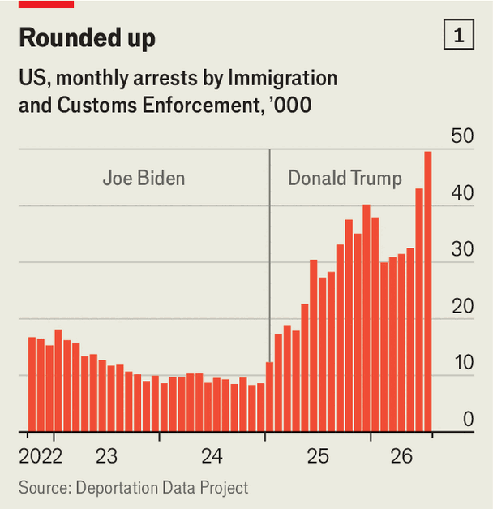
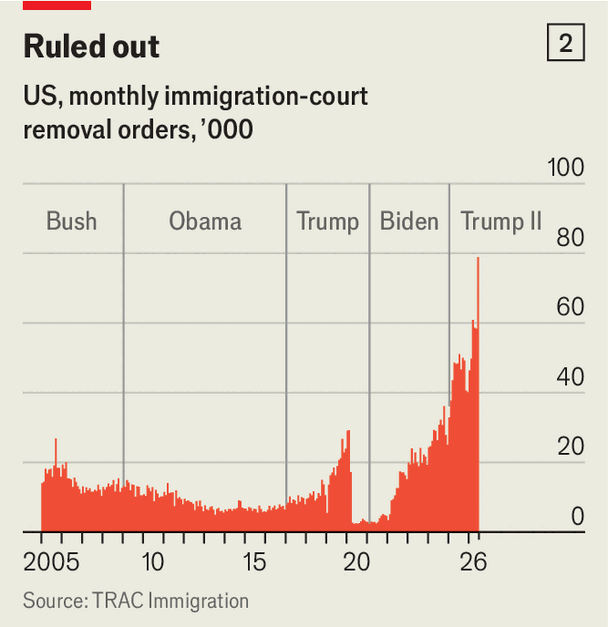
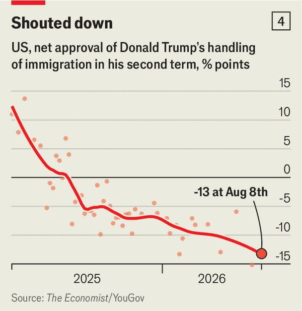
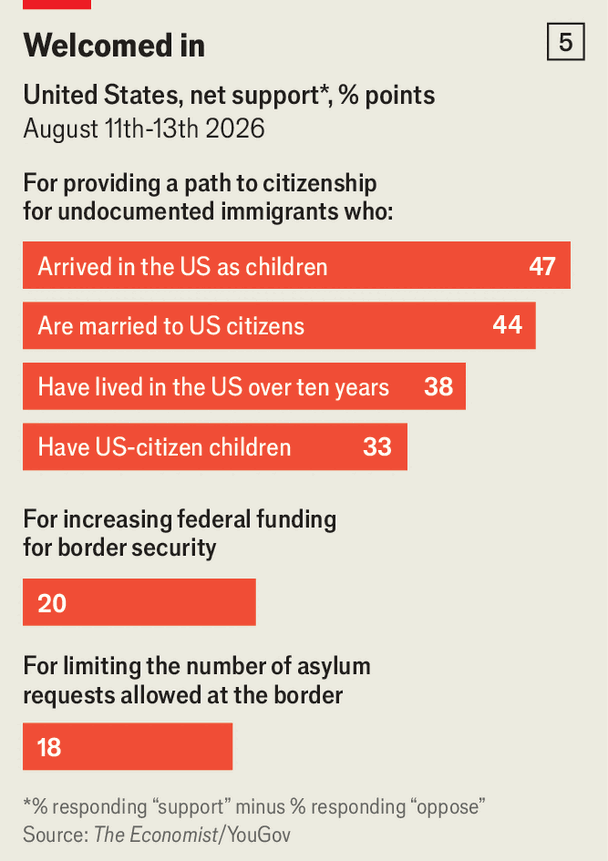

Donald Trump is delivering the deportations he promised
But that is not proving popular. The politics of immigration are changing

Aug 27th 2026
IMMIGRATION IS Donald Trump’s signature issue—and one that helps him win campaigns. During the 2024 presidential race he promised to carry out the largest deportation campaign in American history. It was a pledge as synonymous with his second presidential run as “build the wall” was with his first in 2016. Days before voters went to the polls, throngs at Madison Square Garden cheered Mr Trump as he boasted that he would round up migrants, whom he called “vicious and bloodthirsty criminals”, and “kick them the hell out of our country as fast as possible”.
More than 18 months into his second term, Mr Trump is delivering many of the deportations he promised. The Department of Homeland Security (DHS) claims that some 1m people have been deported during Mr Trump’s presidency. The actual number may be much lower; the administration stopped publishing official statistics, making a clean accounting impossible. But even so Mr Trump is now presiding over a deportation machine that is unlike any that have come before it, even that of the reigning record-holder as deporter-in-chief, Barack Obama.
That is striking considering how the year started. In January, after federal agents killed two American citizens during immigration raids in Minneapolis, the administration was in retreat. Protests sprung up around the country. Gregory Bovino, the martial face of the Minneapolis operation, was exiled to California where he retired. Kristi Noem, the DHS secretary, was sacked, and DHS was shut down for 76 days amid a fight in Congress over funding for immigration enforcement.
Ms Noem was ultimately replaced by Markwayne Mullin, a Republican senator from Oklahoma who said during his confirmation hearing that his goal was to stay out of the news. Border Patrol agents are no longer rappelling from helicopters onto apartment buildings or casually tear-gassing protesters in the streets.

But a retreat from deportation theatre is not the same as a retreat from deportations. The budget stand-off over immigration enforcement ended in June with Republicans voting en bloc to shower Immigration and Customs Enforcement (ICE) and Border Patrol with another $70bn. Since then ICE arrests of immigrants have shot up—to 43,000 in June and nearly 50,000 in July, the highest monthly total since Mr Trump took office and a record for the agency (see chart 1).

Immigration judges, who work for the Justice Department, are issuing removal orders for migrants at by far the highest rate ever (see chart 2). More than 1.6m migrants now have removal orders which put them one ICE encounter away from deportation. Activists trying to shield their neighbours from deportation are calling it the “shadow surge”.
Yet even in their less publicly confrontational form, Mr Trump’s mass deportations remain more aggressive, novel and cruel than even some of his voters expected. That is in part because the kinds of deportations Mr Trump is pursuing are very different from those conducted previously. In the 2013 fiscal year, when the Obama administration deported more than 430,000 people, a record, he was focused mostly on recent border-crossers and criminals. With border crossings now de minimis, Mr Trump’s deportations are mostly from the interior of the country, targeting many migrants who have been living in America for years. They might be married to an American citizen, or have children who are citizens. Some are children themselves.
To pursue such a campaign requires far more confrontations in the street, more long-term detentions, more deportation flights. And far more controversy. Many law-abiding immigrants have been caught in the dragnet, tearing apart families and hurting employers. Since Mr Trump was sworn in 56 people have died in ICE detention, more than twice as many as during the entire Biden administration; critics say many migrants are held in squalid, overcrowded conditions.
ICE has done little to shed its reputation for treating migrants cruelly; this month it emerged that the agency plans to spend up to $20m equipping agents with gloves that can deliver electric shocks. DHS is also considering a massive new detention facility for unaccompanied children, and has made it harder for kids to find lawyers to represent them in immigration courts. There is a steady drip of news reports of toddlers facing deportation alone or otherwise being mistreated.

All this has taken a toll on support for Mr Trump’s policies: more than a fifth of his 2024 voters now support abolishing ICE, a position once mocked as a far-left organising slogan (47% of all Americans now support abolishing the agency, see chart 3). The backlash against Mr Trump’s campaign could hurt Republicans in the midterm elections—and, in the long run, could lead to an overhaul of the immigration system. In the short run, the deportations look to continue with no let-up, only under new, less blustery leadership.
In style and substance, Mr Mullin seems like a disciple of Tom Homan, Mr Trump’s border czar. Both men are loyal supporters of the president and immigration hardliners, but evince more interest in enforcement than in showy raids. “I’m not handling things like maybe the past secretary had,” Mr Mullin told a gathering of governors in Oklahoma City in August. “We’re not doing job-site raids. We’re not going to Home Depot and raiding the parking lot.” Governors, Democratic and Republican, told The Economist that DHS has been much more responsive to them since he took charge. When Wes Moore, the Democratic governor of Maryland and a potential 2028 presidential candidate, took the mic, Mr Mullin quipped, “I talk to this guy quite a bit.”
DHS under Mr Mullin has stopped laying siege to Democratic-run cities. But street arrests of immigrants continue apace. ICE officials told the New York Times this summer that the White House is demanding 2,000 arrests each day. It has yet to sustain such a level of enforcement over the course of a month, but the pressure to rack up numbers appears to have produced dangerous results. Two migrants in Texas and Maine were killed by ICE agents in July during attempted traffic-stop arrests. Days later, four men were approached by immigration agents in Florida. They fled on foot; one man was struck by a lorry and died.
Meanwhile, the administration has vastly increased the number of people eligible for arrest by pursuing novel legal strategies, making at least 1.7m immigrants newly vulnerable to deportation.
The most straightforward way they have managed this is by terminating visas and temporary immigration and humanitarian programmes for certain nationalities. During the Biden administration, the southern border was overrun with people hoping to apply for asylum. To lessen pressure on the border, President Joe Biden expanded alternative legal options for some migrants to enter or stay in the country, including humanitarian “parole” and Temporary Protected Status (TPS). A TPS designation allows certain nationalities stranded in America because of natural or political disasters in their home countries to work and reside legally for a period of time.
The Trump administration has systematically dismantled those protections, as well as others that had been in place for decades. “Many of us warned them back in 2022 that we were letting in people who would be deeply vulnerable later on,” says Andrea Flores, who worked on immigration policy during the Obama and Biden administrations. On balance the courts have helped along Mr Trump’s deportation drive. In June, the Supreme Court ruled the administration could end protections for TPS-holders from Syria and Haiti.
More than 1m people from 13 countries have now lost TPS. Many of them can no longer work, are subject to removal by court order—and, unlike some undocumented people, are particularly exposed because the government knows exactly where they are. “ALL TPS terminations are now IN EFFECT,” DHS posted on X, a social-media site. “Those with terminated TPS should leave NOW. If they don’t, we will DEPORT them.” Another 170,000 Salvadorans with TPS are set to lose their status in September; some of them have lived in America for 25 years.
Mr Trump’s fixation on certain TPS-holders dates back years. During a presidential debate with Kamala Harris in 2024 he claimed that Haitians in Springfield, Ohio were “eating the pets of the people that live there” (they were not). In July ICE began ordering Haitians in central Ohio to report to a local field office in Columbus where they were fitted with an ankle monitor—after reportedly being invited to self-deport. “Of course no one took that,” says Guerline Jozef of the Haitian Bridge Alliance, a national advocacy organisation.
Much of Haiti is controlled by gangs and beset by violence. Ms Jozef says deportation to the country is “potentially a death sentence”. Removal flights to Haiti had dwindled in recent years, but not stopped. In 2026 there has been one such flight each month from Louisiana to Cap-Haitien.
It is not only former TPS-holders who are suddenly vulnerable. The administration has also gummed up the bureaucratic process such that many immigrants—including applicants for visa renewal and for green cards—have been placed in legal limbo. (The number of pending immigration applications has reached a whopping 11.3m cases.) Federal agents have also recently ramped up arrests of immigrants with expired visas at airports.
Such arrests are possible because ICE is collaborating more closely with the Transportation Security Administration, according to documents obtained by American Oversight, a watchdog group. Some people detained while trying to fly have been stuck in the long queue to adjust their immigration status. Mr Mullin maintains that immigrants who follow the rules but find themselves in legal limbo won’t be deported. “If you’re going through the family-visa system, you have no criminal history, you get picked up, and…you’ve been showing up to your court dates,” he said in Oklahoma City, “you’re going to be released.” Immigrants will be forgiven if they do not take him at his word.
DHS is also using artificial intelligence to help find people to arrest. Palantir, a tech firm with a long history of working with ICE, has provided the government with a tool known as ELITE. According to court testimony, agents using ELITE can generate a “target list” with photos and names showing where immigrants are likely to be living. “It’s kind of like Google Maps,” one agent says. “If there’s like one pin at a house and the likelihood of them actually living there is like 10%, you’re not going to go there.”
Once they are picked up by ICE, immigrants are hustled through immigration court at a frenetic pace. Judges are holding so-called “mega-master hearings” to process cases as quickly as possible. Mobile Pathways, a non-profit that tracks immigration records, defines a mega-master as a hearing in which more than 50 cases are called. The outfit counted more than 1,300 such hearings in June.
On a recent Friday in downtown Los Angeles, Judge Jaime Jasso heard 96 cases during one three-hour hearing. Most of them lasted less than five minutes. His eyes often flitted to the clock, ever-conscious of the time. A clerk at the court said that each judge has one mega-master a week, with immigrants and their families filling the hallway outside.
Many immigrants do not show up to their court dates—either for fear that their case will be closed and they will be arrested, or, increasingly, because they do not receive sufficient notice that their hearing was changed. One lawyer who was unable to reach her clients told Judge Jasso that she was not sure they were still in the country. When a migrant fails to appear, a DHS lawyer will request that they be ordered to be removed “in absentia”. That was the outcome for more than a third of all cases in July, according to Mobile Pathways. The more no-shows there are, the more removal orders the government can rack up.
Mr Trump’s mass-deportation campaign may be focused on immigrants, but it is also having a broader effect on America’s rule of law. ICE and Border Patrol agents have assaulted protesters with impunity, and have tried to arrest some with dubious claims that they had used their car as a weapon. When masked officers without identification hustle migrants into unmarked cars without warning, it looks like a kidnapping. Thousands of federal agents have been diverted from other investigative work, such as counter-terrorism or drug smuggling, to aid ICE.
Local law-enforcement officers, including staunch conservatives, worry that aggressive tactics could erode trust in police more broadly. “You can’t go in and start throwing flashbangs in communities…and expect to be successful,” says Mark Dannels, a county sheriff in Arizona. Because Mr Dannels is close to the administration, he says, several sheriffs called him to complain. Many police departments had also worked hard to gain trust in immigrant communities, persuading undocumented people that they could safely report crimes. That work has been undone.

Taken together, the rough edges and sheer brutality of Mr Trump’s deportation campaign are starting to reshape politics. Americans have largely soured on the president’s immigration agenda (see chart 4). His net approval rating on immigration hit -13 in August, according to an Economist/YouGov poll. Among Hispanics—whose support helped propel him to victory in 2024—net approval for Mr Trump’s handling of immigration is a disastrous -35. Some 55% of Hispanics support abolishing ICE, ten percentage points more than white or black Americans. Democrats are taking aim at several majority-Hispanic House seats currently held by Republicans, including two in south Texas.
Yet America’s immigration politics may grow only more toxic. Mass deportations continue to be popular among Mr Trump’s base: 93% of those who identify as MAGA Republicans approve of the president’s handling of immigration. Mike Howell, a founder of the Mass Deportation Coalition, a group formed after Operation Metro Surge in Minneapolis to press the administration to stay the course, is not impressed with the higher arrest numbers. “They’re still really low,” he says. “It’s about going to places where there’s high densities, and, you know, grabbing there.” He hopes that support for mass deportations becomes a litmus test in every Republican primary election going forward.
Indeed MAGA Republicans view Mr Mullin’s less confrontational approach as a cowardly retreat. Steve Bannon, Mr Trump’s former chief strategist, and other MAGA influencers have argued for his replacement. Mr Mullin has perceived the need to shore up the MAGA base. In August, after he had made a reasonable-sounding comment to governors that some industries do need migrant workers, he followed up with a post on X: “NO amnesty for illegal aliens. Ever.”
Democrats may also be heading for an intra-party fight over immigration enforcement. Although a clear majority of Democrats now support abolishing ICE, many stalwarts in the party fear sounding so radical on the issue that they alienate the broad swathe of voters who still support strong border security.
Some Democratic and Republican moderates hope that Mr Trump’s cruelty, set against a long history of failed border policies, including under Mr Biden, has laid bare the need for immigration reform. Congress has not passed any meaningful immigration package since the 1990s. “I’ve seen us try and fail, and try and fail, and get close and fail, and I think if you look at the impact on our country for not getting this right, it’s dramatic,” admits John Curtis, a Republican senator from Utah.
The irony is that for 20 years it has mostly been Republicans, including Mr Trump himself, who have blocked immigration reform, helping to foster the political environment that made Mr Trump’s anti-immigrant rhetoric so popular.

Today about half of Americans support increasing investment in border security and restricting the number of migrants who can apply for asylum. But a greater share of Americans also support a path to citizenship for undocumented immigrants who arrived as children, are married to an American citizen, have lived in the country for at least a decade, or have American children (see chart 5). All these are the kinds of immigrants Mr Trump is rounding up. At least some in the campaign crowds who lustily cheered on Mr Trump seem to be catching on that the deportation drive he is delivering is not the one they wanted. ■